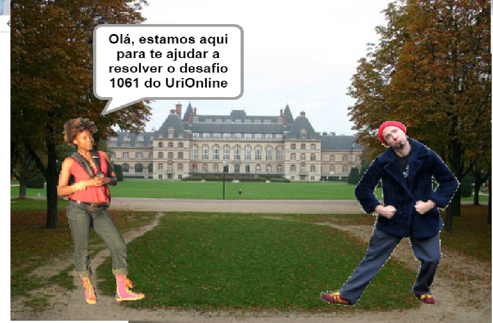

COMO IMPLEMENTAMOS O EXERCÍCIO 1061 NO SCRATCH
Explicação da lógica por trás da resolução do exercício 1061
Link para a animação no Sratch

O exercício 1061 da lista de iniciantes do Urionline pede que nós ajudemos o personagem Pedrinho a calcular a duração em dias, horas, minutos e segundos, de eventos ocorridos no mês de Abril. Baseado nisso, desenvolvemos um algoritmo com auxílio da ferramenta Scratch para que possamos ajudar Pedrinho a resolver seu problema.
Para resolver este exercício é muito simples.
Primeiro precisamos criar uma variável para guardar o dia do início do evento.
Precisamos criar uma lista para que seja possível fazer a separação da String "Dias " do número de dias propriamente dito. Por Exemplo: "Dias 9", precisamos isolar o número 9 separando-o da String para que seja possível utilizá-lo para realizar cálculos. Para isso utilizaramos o comando "Split" do Python, que separa conteúdos de uma String baseado no parâmetro que recebe.
Agora precisaremos criar uma outra lista para guardar as horas e depois utilizá-las para realziar os cálculos.
Precisamos guardar a hora de início no índice 0. Os minutos no índice 1 e os segundos no índice 2 da lista que armazena as horas. Devemos fazer o mesmo com relação à data do término do evento.
Feito isso, partimos para a realização do cálculo de dias, horas, minutos e segundos de duração do evento.
Devemos subtrair o dia do final do evento do dia do início do evento e armazenar o resultado em uma variável. Logo após fazemos o mesmo com a hora de início e a hora do fim do evento. Um detalhe aqui: devemos utilizar o comando condicional IF, pois se o número do dia do início do evento for menor que o número do dia do final do evento poderemos ter alguns problemas, pois o resultado será um número negativo e o número de dias será exibido de maneira incorreta. Também se minutos < 0: minutos += 60 e horas -= 1 e se segundos < 0: segundos += 60 e minutos -= 1.
Pronto, agora podemos imprimir o resultado na tela, utilizando os personagens do Scratch para isso.
Para uma melhor compreensão, segue o algoritmo implementado na linguagem Python: Link
Integrantes do Grupo 7
- Guilherme Freitas Araújo Silva
- Gustavo Alves da Silva
- José Carlos Alves Santos Junior
- Juan Patrick de Andrade Santos
- Leonardo Carvalho Pinheiro